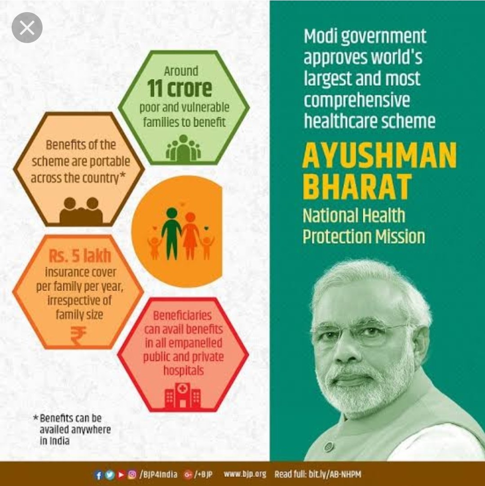
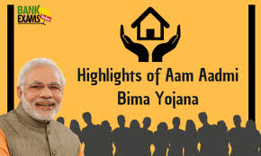
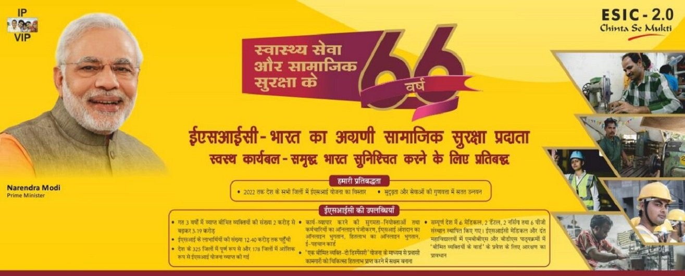

Government Health Insurance Schemes in India
1) Ayushman Bharat:

What is this Scheme?
This scheme came into existence because of recommendations made by the National Health Policy. Ayushman Bharat Pradhan Mantri Yojana is a scheme of Government of India to provide free access to healthcare for 40% of people in the country.People using the program access thier own primary care services from a family doctor
It offers a health cover of Rs. 5 lakhs per family on an annual basis, and the payable premium is Rs. 30.
Eligibility to avail Ayushman Bharat Health Scheme:
- Residing in only one room with kuccha walls and kuccha roof.
- Landless households finding their income from manual casual labour.
- Female-headed households (where no adult male member between the age group of 16-59 years)
The Documents Required For Enrolling in the Ayushman Bharat Scheme Are:
- Special Category Certificate.
- Age Proof Documents.
- Scanned Copy of Aadhar.
- Scanned Copy of Aadhar.
- Income Certificate.
- Caste Certificate.
- Family Structure.
- Identification Details.
- Contact Information
How to apply online for Ayushman Bharat Yojana?
- Visit Ayushman Bharat Pradhan Mantri Jan Arogya Yojana official website, Click here to Apply
- Now you have to log on to the government website.
- On the home page enter your mobile number.
- Just below that you will see the captcha, enter the captcha in the empty box.
- After that click on Generate OTP option.
- An OTP number will be sent to your mobile, by which you can go to the website and verify.
Complete the necessary detail to get the most benefits out of this scheme.
Note: After your name is registered on the Pradhan Mantri Jan Arogya Yojana(PM-JAY) website, with the help of your ration card or mobile number, you can know that you are not getting the benefit of this scheme.
So, these were some initial steps you need to follow for Ayushman Bharat Yojana (PM-JAY) registration.
After PM Ayushman Bharat Yojana registration you do not need to enrol anywhere to claim benefits under PMJAY Ayushman Bharat Yojana. You just need to get yourself identified at the nearest empanelled hospital or Community Service Centre (CSC).
2)Aam Admi Bhima Yojana:

What is this Scheme?
Aam Aadmi Bima Yojana is a Social Security Scheme which had been initiated as well as administered by the Indian Government for mostly the rural landless households. It was launched as recently as October 2, 2007.
The Aam Aadmi Bima Yojana covers natural death/accidental death, permanent total disability, and partial permanent disability. This scheme provides coverage to the head of the family or one earning member in the family. The premium of Rs.200/- per person per annum is shared equally by the Central Government and the State Government, so as to ensure that the insured person has to pay no premium.
The following are the basic requirements for applying for the Aam Aadmi Bima Yojana:
- The applicants should be aged between 18 and 59.
- The applicant ideally should be the head of the family or one of the earning members of a below poverty line family (BPL) or marginally above the poverty line under identified vocational group/rural landless household.
The Documents Required For Enrolling in the Aam Aadmi Bima Yojana Are:
- Aadhar Card of the applicant
- Government-issued Identity Card
- Ration card
- Birth certificate
- School certificate evidence
- Voter id
- Mobile number
- Passport size photo
- Caste Certificate
Benefits of Aam Aadmi Bhima Yojana
1.The Death Benefit Of this scheme is given to the surviving nominees or family of the policyholder on the event of a natural death is Rs. 30,000/-
2.In case the death has occurred due to accident/on permanent total disability due to accident (loss of 2 eyes or 2 limbs) the amount given to the nominees or family members of the owner of the policy is Rs. 75,000.
3.In the case of partial permanent disability due to accident (loss of one eye or one limb) the amount given to the nominees or family members of the owner of the policy is Rs. 37500/-
4.Scholarship benefits: Scholarship is a Free Add-on benefit provided to a maximum of two children of the beneficiary who are studying between 9th to 12th Standard @ Rs.100/= per month for each child, which is payable at a half yearly basis – July 1 and on January 1, every year.
How to apply online for Aam admi bima yojana?
- Firstly, go to the official website of the LIC, Click here to Apply
- The homepage of the website will show on the screen.
- .Select the option “LIC Aam Aadmi Bima Yojana” given at the homepage of the website.
- An application form will show up on your screen.
- .Fill the mandatory details asked in the application form such as Personal details, Address details, Income details, etc.
- Upload the necessary documents asked.
- Select the Submit option and your application form is submitted.
3)EMPLOYEE'S STATE INSURANCE SCHEME(ESIS):

What is this Scheme?
The primary objective by the Government of India to launch the ESI scheme is to cover workers from certain health-related contingencies such as permanent or temporary disablement, sickness, death due to employment injury or occupational disease, which impacts the earning capacity of the worker or leads to loss of income. This scheme enables workers to negate the financial burden due to such unfortunate eventualities. The scheme also offers maternity benefits to the beneficiaries.
ESI scheme is a cover for workers which protects them with medical care for the insured and their dependents as well as offer a variety of cash benefits during loss of wages or disablement. Also, the scheme offers pension known as dependent benefit to the family members of the insured person in case of death or injury due to occupational hazards while at work.
Eligibility to apply for Employees’ State Insurance Scheme (ESIS):
- The Employees’ State Insurance Scheme is applicable to the employees/workers of organisations
- Non-seasonal factories as defined under Section 2 (12) of the Employees’ State Insurance Act, 1948
Under Section 1(5) coverage is allowed to the following
- Restaurants
- Motor road transports
- Newspaper establishments
- Hotels
- Shops
- Movie theatres or any other types of theatres
- Private medical institutions
- Education institutions
Other establishments as defined under the Employees’ State Insurance Act, 1948
These establishments can opt for ESIS if they have at least 10 workers and the wages of the workers is up to INR 21,000. Moreover, in the case of Maharashtra and Chandigarh, the establishments should have a minimum of 20 workers with wages up to INR 21,000 to opt for the ESIS scheme.
The Documents Required For Enrolling in the ESI Online Registration Are:
- The Registration Certificate acquired under the Shops and Establishment Act or Factories Act
- Certificate of Registration in case of a partnership or a company.
- List of all employees working in the establishment.
- List of all employees working in the establishment.
- PAN Card details of the Business Entity and of all employees.
- Cancelled cheque of the bank account of the company.
- List of shareholders and directors of the company.
- Register which includes the attendance details of the employees.
- Employer’s Registration Form (Form No.1) which should be downloaded online, filled and uploaded on the ESIC website along with the above mentioned documents.
How to apply online for Employees’ State Insurance Scheme ?
- Visit the ESIC Portal and click on ‘Login’, Click here to Apply
- On the new page, click on ‘Sign Up’.
- Enter your company name, employer name, state, region, email ID (which will be your username), and your phone number.
- Click on the checkbox to confirm your establishment or factory is under an exclusive labour contract, manpower suppliers, security agencies or contractors supplying labour categories.
- Click on ‘Submit’. An email will be sent with login credentials or details.
- Now that you have signed up, you need to visit the ESIC Portal to login.
- Enter the username and password received by email and click on ‘Login’.
- Click on ‘New Employer Registration’.
- Select the type of unit and click on submit
- On the new page, enter the name of the unit, complete postal address of the factory or the establishment and the police station under whose jurisdiction your unit is.
- Enter if the building or the premises of the factory or the establishment is owned or hired and click on ‘Next’ to proceed.
- Enter the nature of the business and category, PAN details, etc. and click on ‘Next’.
- On the next page, enter the date of commencement of the factory or establishment and licence details (if any).
- Now, select the constitution of ownership and details of owners and then click on ‘Save’ after entering all the designation of owners and then click on ‘Next’.
- Here, enter the number of employees working in your establishment or factory and the number of employees earning less than Rs.21,000 and click on ‘Save’.
- In the new page, enter the date when the first 10/20 employees were employed and then click on ‘Employee Declaration Form’.
- Select ‘Yes’ if the insured person is already registered and enter IP number and date of joining. Select ‘No’ if IP is not registered and click on ‘Continue’.
- Enter the name of the IP and father’s name, address, date of birth, gender, marital status, family details and date of joining.
- Now, click on the checkbox and click on ‘Submit’.
- Once all details are duly filled, click on ‘Close’ on the new page.
- On the new page, select the respective ESI branch office and the inspection division.
- Now, click on the checkbox to declare that information provided is correct and then click on ‘Submit’. You’ll be redirected to a new page
- On the new page, you will have to click on ‘Pay Initial Contribution’ and click on ‘Submit’. You will be provided with a Challan Number for future reference.
- Click on ‘Continue’ to pay through the required payment gateway.
Once the payment process is completed, you will receive the system generated ESI Registration Letter known as C-11 to your registered email ID. The C-11 acts as proof of registration of the company with the ESIC.